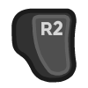

Menus¶
Main Controls¶
For any menus that expect you to use a mouse:
to move the cursor.
 or click
And specifically while in-game:
to bring up or dismiss the pause menu.
Other Controls¶
Some less-common in-game menus don’t expect mouse control, but rather want you to type a number from 0 to 9. This will be covered further on the Other Stuff page, but the bottom line if you are faced with one of those menus:
to bring up a number wheel menu; click the pad to select a number.
Doing competitive multiplayer with Steam Deck controls seems like an unlikely challenge for anyone to take on, but if you do here’s an FYI about the unit trading menu:

(i.e. shift click) to make clicks on up/down arrows immediately max out or zero out that unit count.